Data Structures and Algorithms
with Object-Oriented Design Patterns in Java
Data Structures and Algorithms
with Object-Oriented Design Patterns in Java
Prim's algorithm
finds a minimum-cost spanning tree
of an edge-weighted, connected, undirected graph  .
The algorithm constructs the minimum-cost spanning tree of a graph
by selecting edges from the graph one-by-one
and adding those edges to the spanning tree.
.
The algorithm constructs the minimum-cost spanning tree of a graph
by selecting edges from the graph one-by-one
and adding those edges to the spanning tree.
Prim's algorithm is essentially
a minor variation of Dijkstra's algorithm
(see Section  ).
To construct the spanning tree,
the algorithm constructs a sequence of spanning trees
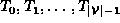,
each of which is a subgraph of G.
The algorithm begins with a tree that contains
one selected vertex, say 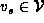.
That is, 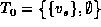.
).
To construct the spanning tree,
the algorithm constructs a sequence of spanning trees
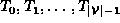,
each of which is a subgraph of G.
The algorithm begins with a tree that contains
one selected vertex, say 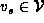.
That is, 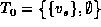.
Given 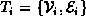, we obtain the next tree in the sequence as follows. Consider the set of edges given by
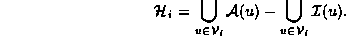
The set 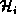 contains all the edges 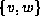 such that exactly one of v or w is in (but not both). Select the edge 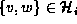 with the smallest edge weight,
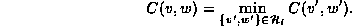
Then 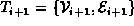, where 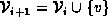 and 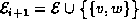. After 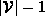 such steps we get 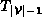 which is the minimum-cost spanning tree of G.
Figure illustrates how Prim's algorithm determines
the minimum-cost spanning tree of the graph 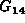 shown in Figure .
The circled vertices are the elements of ,
the solid edges represent the elements of
and the dashed edges represent the elements of .
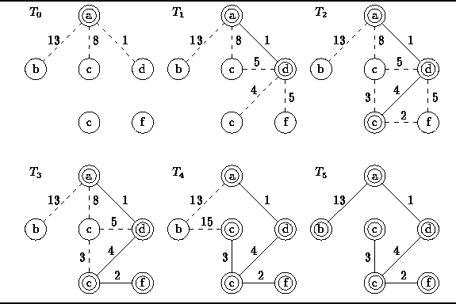
Figure: Operation of Prim's algorithm.
 Copyright © 1998 by Bruno R. Preiss, P.Eng. All rights reserved.
Copyright © 1998 by Bruno R. Preiss, P.Eng. All rights reserved.